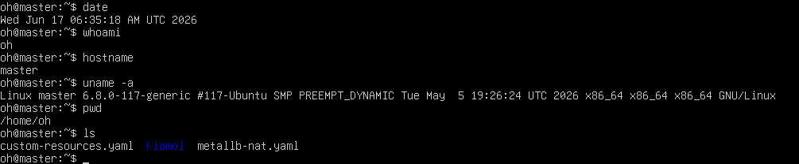

클라우드란? — 개념, AWS 입문, 리눅스 가상머신
첫 주차에서는 "클라우드란 무엇인가"라는 가장 근본적인 질문에서 출발했다. 온프레미스와 클라우드를 비교하고, 클라우드 서비스의 유형(IaaS·PaaS·SaaS)과 구축 모델을 정리한 뒤, 실제로 AWS 계정을 만들고 VMware에 우분투 리눅스를 설치하면서 앞으로의 실습 환경을 준비했다.
이번 주 학습 목표
- 온프레미스와 클라우드의 차이, 클라우드 컴퓨팅의 이점을 이해한다.
- IaaS·PaaS·SaaS와 퍼블릭/프라이빗/하이브리드 구축 모델을 구분한다.
- 가상화와 서버리스의 개념을 잡는다.
- AWS에 가입하고 관리 콘솔을 둘러본다.
- VMware로 우분투를 설치하고 기초 리눅스 명령어를 사용한다.
1. 클라우드 컴퓨팅이란?
전통적인 IT 자원 구축 방식인 온프레미스(on-premises) 는 서버·네트워크·공간 등 모든 것을 사용자가 직접 마련하고 운영하는 방식이다. 'premise'가 건물·토지를 뜻하듯, 자체 공간에 자원을 두고 직접 관리한다. 안정적이지만 초기 비용과 운영 부담이 크다.
반면 클라우드(cloud) 는 인터넷 어딘가에 "구름처럼" 모여 있는, 눈에 보이지 않는 IT 자원의 집합이다. 그리고 클라우드 컴퓨팅(cloud computing) 은 이 자원을 인터넷을 통해 필요할 때 즉시(on-demand) 가져다 쓰고 사용한 만큼만 비용을 내는(pay per use) 방식이다.
클라우드 컴퓨팅의 3가지 이점
- 민첩성 — 컴퓨팅·스토리지·DB부터 머신러닝·빅데이터까지 필요한 자원을 빠르게 끌어다 쓸 수 있다.
- 탄력성 — 미래를 대비해 자원을 과하게 미리 사둘 필요 없이, 필요한 만큼 늘리고 줄인다.
- 비용 절감 — 데이터센터를 직접 짓는 것보다 사용량 기반 과금이 대체로 훨씬 저렴하다.
서비스 유형 — IaaS · PaaS · SaaS
클라우드 서비스는 사용자와 공급자가 각각 어디까지 관리하느냐에 따라 세 가지로 나뉜다.
| 유형 | 공급자가 제공하는 범위 | 사용자가 관리하는 범위 | 비유(요리) |
|---|---|---|---|
| IaaS | 서버·네트워크·스토리지 등 인프라 + 가상화 | OS·미들웨어·앱 | 밀키트 구입 후 약간만 조리 |
| PaaS | 인프라 + 플랫폼(런타임 등) | 애플리케이션만 | 음식점에 배달 주문 |
| SaaS | 애플리케이션까지 전부 | 서비스 이용만 | 출장 뷔페가 다 해줌 |
| (온프레미스) | — | 전부 직접 | 재료 사서 다 직접 |
구축 모델 — 퍼블릭 / 프라이빗 / 하이브리드
- 퍼블릭 클라우드: 공급자(AWS·GCP·Azure)가 주체. 사용자는 자원을 소유하지 않고 빌려 쓴다. 확장성·글로벌 서비스에 유리.
- 프라이빗 클라우드: 사용자가 주체. 온프레미스 환경에 구축해 보안성이 높지만 확장성은 떨어진다.
- 하이브리드 클라우드: 둘을 연결해 단점을 보완한 모델.
가상화와 서버리스
가상화(Virtualization)
물리 서버의 CPU·메모리 등 자원을 나눠 가상 서버를 만드는 기술. 클라우드에서 원하는 사양의 서버를 즉시 받을 수 있는 것은 가상화 덕분이다. 가상 서버는 물리 서버 자원의 일부를 독점해 마치 독립된 서버처럼 동작한다.
서버리스(Serverless)
"서버가 없다"가 아니라 서비스가 호출될 때만 서버가 가동되는 방식. 사용한 시간만큼만 과금되므로 비용을 줄일 수 있다.
2. AWS 입문
AWS(Amazon Web Services) 는 200개가 넘는 클라우드 서비스를 제공하는, 글로벌 점유율 1위 퍼블릭 클라우드 공급자다. 전 세계 여러 리전(Region, 데이터센터가 모인 지리적 위치) 과 그 안의 가용 영역(Availability Zone) 으로 인프라가 구성되며, 우리나라에는 서울 리전이 있다.
이 수업에서 다룰 핵심 서비스는 다음과 같다.
- 컴퓨팅 — Amazon EC2 (가상 서버)
- 스토리지 — Amazon S3 / EBS / EFS
- 데이터베이스 — Amazon RDS / Aurora / DynamoDB
- 보안/자격 증명 — AWS IAM
과금 주의 — 프리 티어와 자원 삭제
AWS는 사용한 만큼 과금(Pay Per Use)한다. 처음 가입하면 12개월간 프리 티어로 일정 사용량까지 무료지만, 한도를 넘기거나 일부 서비스는 비용이 발생한다. 실습이 끝나면 생성한 자원(인스턴스 등)을 반드시 삭제하는 습관을 들이는 게 좋다.
3. 실습 ① — AWS 가입하기 (프리 티어)
콘솔 가입 흐름을 따라가며 진행했다.
- aws.amazon.com 접속 → [AWS 계정 생성] 클릭
- 이메일 주소·계정 이름 입력 → 발송된 6자리 확인 코드 입력
- 루트 사용자 암호 설정
- 개인 정보(영문) 입력
- 결제 정보 입력 (가입 확인용으로 소액 결제 후 즉시 취소됨)
- 휴대전화 SMS 인증 + 캡차
- [기본 지원 - 무료] 서포트 플랜 선택 → 가입 완료
- AWS Management Console로 이동해 구성 둘러보기
AWS 관리 콘솔 첫 화면
가입 완료 후 관리 콘솔에 로그인한 화면을 캡처해 이 자리에 넣으면 좋다. (서비스 검색창, 리전 선택 메뉴가 보이도록)
4. 실습 ② — VMware에 우분투 리눅스 설치
서버 실습을 위해 VMware Workstation Player에 게스트 OS로 우분투를 설치했다.
- VMware Workstation Player 설치 (vmware.com/kr)
- Create a New Virtual Machine → 게스트 OS는 나중에 설치(빈 디스크 먼저 생성) → 종류는 Linux
- 가상머신 이름·위치 지정, 디스크 용량 20GB, 저장 방식은 Split virtual disk into multiple files
- ubuntu.com에서 ISO 다운로드 → ISO 연결 후 VMware 시작
- 설치 옵션: 언어 한국어, 키보드 Korean, 최소 설치 + 업데이트 다운로드 체크 해제, "디스크를 지우고 Ubuntu 설치", 시간대 Seoul, 사용자 계정(
user1)·컴퓨터 이름(myubuntu) 등록 - 설치 완료 후 재부팅 → 로그인
기초 리눅스 명령어
터미널을 열고(프로그램 표시 → 터미널) 가장 기본적인 명령어부터 익혔다.
date # 현재 날짜와 시간 출력
clear # 화면 지우기
man date # 명령어 사용법(매뉴얼) 보기
passwd # 현재 계정 비밀번호 변경
명령어는 보통 명령 [옵션] [인자] 구조를 갖는다. 예를 들어 ls -l /etc 는 명령(ls) + 옵션(-l) + 인자(/etc)의 조합이다.
명령행 편집 단축키
- 단어 지우기:
Ctrl + W - 한 줄 전체 지우기:
Ctrl + U - 터미널 종료:
exit또는Ctrl + D

▲ Ubuntu 24.04 터미널에서
date·whoami·hostname·uname -a·pwd·ls 등 기초 리눅스 명령을 실행한 결과.
실습 중 만난 문제와 해결
VMware에서 우분투가 너무 느리거나 부팅이 안 됨
원인: 가상머신에 할당한 메모리/CPU가 부족하거나, BIOS에서 가상화(Intel VT-x/AMD-V)가 꺼져 있는 경우가 많다.
해결: 가상머신 설정에서 메모리를 2GB 이상·CPU 코어 2개 정도로 늘리고, 부팅이 막히면 PC 재시작 후 BIOS에서 가상화 기능을 활성화한다. Windows라면 Hyper-V와 충돌할 수 있어 Windows 기능에서 Hyper-V를 끄는 것도 방법이다.
AWS 가입 시 결제 카드 등록에서 막힘
원인: 해외 결제가 막힌 카드이거나, 가입 확인용 소액 결제(승인)가 거절되는 경우.
해결: 해외 결제가 가능한 카드를 사용하고, 결제 정보의 영문 주소·이름이 카드 정보와 일치하는지 확인한다. 이 단계의 소액 결제는 확인용이며 곧 취소된다.
회고
추상적으로만 알던 "클라우드"가 온프레미스의 부담을 덜기 위한 사용량 기반 IT 자원이라는 점이 정리됐다. 특히 IaaS·PaaS·SaaS를 요리에 비유한 설명이 직관적이었다. AWS 가입과 리눅스 설치는 단순 작업 같지만, 이후 모든 실습의 토대가 되는 환경을 직접 만들었다는 점에서 의미가 컸다. 다음 주차에서는 이 위에서 실제 EC2 서버를 띄워 본다.